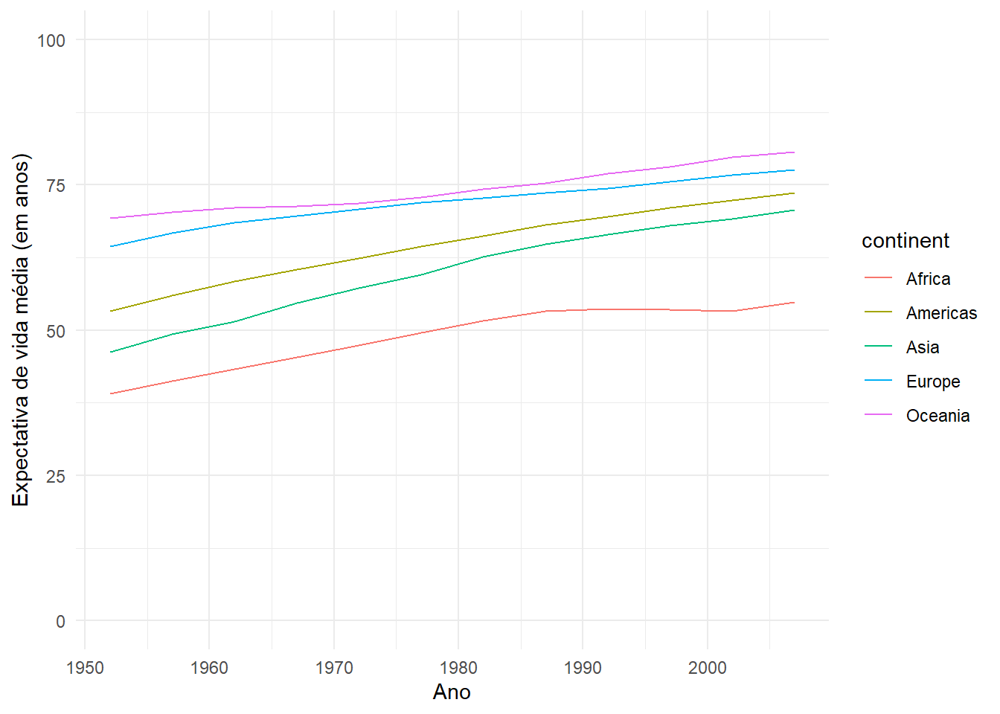
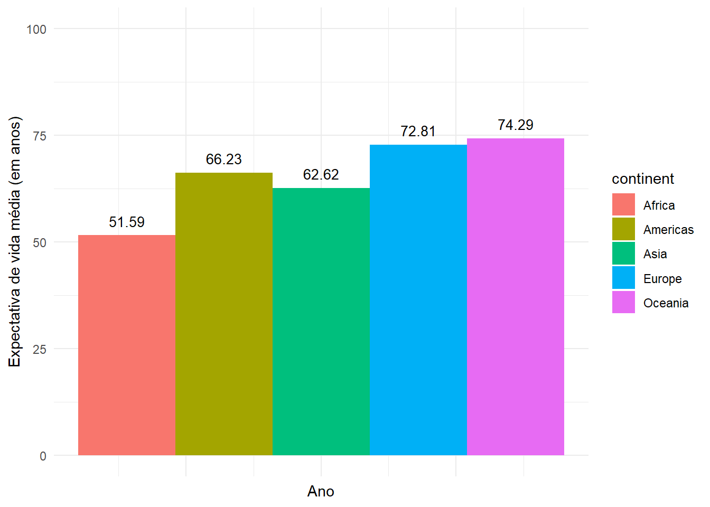
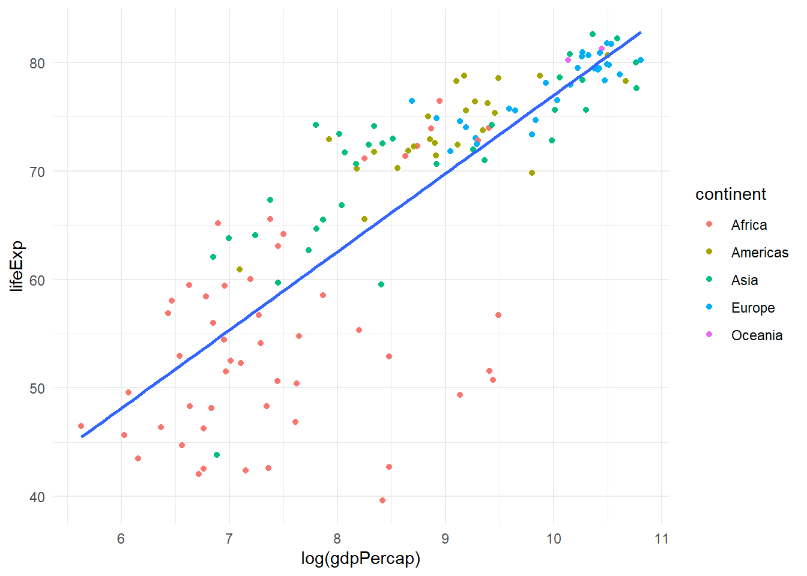

# install.packages("tidyverse")
# install.packages("gapminder")
library(tidyverse)
library(gapminder)
library(modelsummary)Primeiro .qmd
Exemplo de análises
O presente documento descreve os procedimentos de análises de dados empregados no curso de elaboração de relatórios com .qmd.
1. Instalando e carregando pacotes de análises
É necessário instalar os pacotes antes do carregamento caso não os tenha instalados na sua própria máquina.
Para isso, use a função install.packages.
2. Carregamento de dados e descrição de variáveis
A fonte da base é o Instituto Gapminder. A missão do instituto é “lutar contra a ignorância devastadora com uma visão baseada em fatos que qualquer pessoa pode compreender”. Para conhecer mais, acesse este link.
Vamos acessar os dados já vem do pacote gapminder.
df <- gapminder
glimpse(df)Rows: 1,704
Columns: 6
$ country <fct> "Afghanistan", "Afghanistan", "Afghanistan", "Afghanistan", …
$ continent <fct> Asia, Asia, Asia, Asia, Asia, Asia, Asia, Asia, Asia, Asia, …
$ year <int> 1952, 1957, 1962, 1967, 1972, 1977, 1982, 1987, 1992, 1997, …
$ lifeExp <dbl> 28.801, 30.332, 31.997, 34.020, 36.088, 38.438, 39.854, 40.8…
$ pop <int> 8425333, 9240934, 10267083, 11537966, 13079460, 14880372, 12…
$ gdpPercap <dbl> 779.4453, 820.8530, 853.1007, 836.1971, 739.9811, 786.1134, …As variáveis do df , conforme apresentado acima, são:
country: país;
continent: continente;
year: ano;
lifeExp: expectativa de vida;
pop: população;
gdpPercap: PIB per capita.
3. Análise exploratória de dados
Vamos fazer uma análise exploratória da expectativa média por continente ao longo do tempo. Para isso, vamos:
Agrupar as observações por continente e ano;
Sumarizar a variável
lifeExp.
exp_media <-
df |>
group_by(continent, year) |>
summarise(expectativa_media = mean(lifeExp)) |>
mutate(expectativa_media = round(expectativa_media, 2))
exp_media# A tibble: 60 × 3
# Groups: continent [5]
continent year expectativa_media
<fct> <int> <dbl>
1 Africa 1952 39.1
2 Africa 1957 41.3
3 Africa 1962 43.3
4 Africa 1967 45.3
5 Africa 1972 47.4
6 Africa 1977 49.6
7 Africa 1982 51.6
8 Africa 1987 53.3
9 Africa 1992 53.6
10 Africa 1997 53.6
# ℹ 50 more rowsEm sequência, vamos plotar no formato de gráfico.
exp_media |>
ggplot(aes(x = year,
y = expectativa_media,
col = continent)) +
geom_line() +
theme_minimal() +
ylim(0, 100) +
xlab("Ano") +
ylab("Expectativa de vida média (em anos)")
Vamos verificar o recorte de um ano apenas: 1982.
exp_media |>
filter(year == "1982") |>
ggplot(aes(x = year,
y = expectativa_media,
fill = continent)) +
geom_col(position = "dodge") +
geom_text(aes(label = expectativa_media),
position = position_dodge(width = 0.9),
vjust = -0.8,
size = 3.5) +
theme_minimal() +
ylim(0, 100) +
xlab("Ano") +
ylab("Expectativa de vida média (em anos)") +
theme(axis.text.x = element_blank())
4. Regressão linear
A seguir, apresentamos um modelo de regressão linear simples entre duas variáveis. A regressão linear é usada para analisar a associação entre duas ou mais variáveis, sendo uma variável dependente e as demais variáveis independentes.
\[ y_i = \beta_0 + \sum_{j=1}^{p} \beta_j\,x_{ij} + \varepsilon_i,\qquad i=1,\dots,n \]
df_modelo <- df |> filter(year == '2007')
modelo1 <- lm("lifeExp ~ gdpPercap",
df_modelo)
modelo2 <- lm("lifeExp ~ log(gdpPercap) + continent",
df_modelo)
modelsummary(
list(modelo1, modelo2),
output = "gt",
estimate = "{estimate}{stars}",
type = "text",
title = "Resultado de Regressão Linear",
conf_level = 0.95,
stars = c("*" = .10,
"**" = .05,
"***" = .01),
gof_rename = c("nobs"="N",
"r.squared"="R²",
"adj.r.squared"="R² ajustado",
"rmse"="RMSE"))| (1) | (2) | |
|---|---|---|
| (Intercept) | 59.566*** | 20.138*** |
| (1.010) | (4.033) | |
| gdpPercap | 0.001*** | |
| (0.000) | ||
| log(gdpPercap) | 4.631*** | |
| (0.527) | ||
| continentAmericas | 11.694*** | |
| (1.655) | ||
| continentAsia | 10.114*** | |
| (1.476) | ||
| continentEurope | 11.268*** | |
| (1.894) | ||
| continentOceania | 12.929*** | |
| (4.521) | ||
| Num.Obs. | 142 | 142 |
| R2 | 0.461 | 0.767 |
| R2 Adj. | 0.457 | 0.759 |
| AIC | 1027.8 | 916.3 |
| BIC | 1036.6 | 937.0 |
| Log.Lik. | -510.880 | -451.167 |
| F | 119.539 | 89.722 |
| RMSE | 8.84 | 5.80 |
df_modelo |>
ggplot(aes(x = log(gdpPercap),
y = lifeExp)) +
geom_point(aes(col = continent)) +
geom_smooth(method = "lm",
se = FALSE) +
theme_minimal()`geom_smooth()` using formula = 'y ~ x'